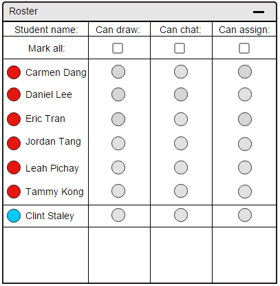

2.6.1. Adding Students To A Roster
The roster tool in E-Class automatically updates itself.
The E-Class tool imports rosters from an external source.
E-Class itself does not provide functionality to manage the content of a roster.
The instructor clicks on the "Import" button on the top right hand corner of the Roster to import from an external source.
For the sake of time, assume all of the following Roster images have an "Import" button at the top right corner of the image, as in Figure 1.
Figure 67 shows an instructor's roster if no students are enrolled in their class.
Figure 67: Instructor's view of a course with zero students
When the instructor clicks on the "Import" button, an input box pops up, asking for a source to import from.
The instructor has to look for the location of the external source to import from.
HTML is the required format of the external source to import from.
In the HTML file, each line refers to a student name.
Figure 68 below shows the pop up box when the instructor clicks on the "Import" button.
Figure 68: Instructor's view of importing a roster
When the instructor has found the roster file (HTML formatted), he presses "Confirm" in order to import that roster.
Pressing "Confirm" closes the box and updates the roster with the students' names.
Below the "Confirm" button, there is a "Cancel" button.
The instructor clicks on the "Cancel" button in order to close the "Import" pop up and not import from an external source.
Figure 3 shows an updated roster with all students of the class unattended when an instructor clicks on "Confirm".
Figure 69: Instructor's view of a course roster with all students unattended
Lecture guests are also able to connect to the E-Class remotely.
In order to do so, the remote guests are to be given a key to use to log-in.
When they log in, their names appears at the bottommost section of current roster.
Guess access is established remotely. More information can be found on Section 2.8.
To distinguish remote guests from students, the bubble indicator to the left of remote users are always be blue.
Figure 70 illustrates a remote user joining the class.

Figure 70: Instructor's view of a lecture guest joining
Prev: [none]
| Next: attendance
| Up: roster
| Top: index